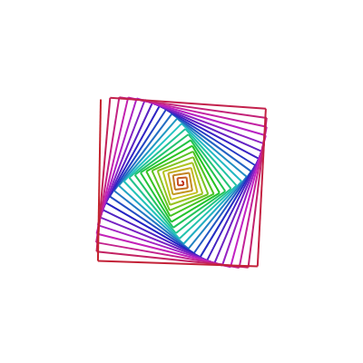

Chapter 1
Introduction
roc-js-interpreter holds two programs that run one subset of JavaScript, and Roc is the language of both. js-x86, in x86/, is an ahead-of-time compiler: it turns a program into a static Linux x86-64 executable. js-vm, in js/, is an interpreter: it turns the program into bytecode and runs that on a virtual machine. The two share a front end (the lexer, the parser, the resolver and the bytecode compiler), so they read a program's text the same way.
AI coding agents (Claude) wrote the code, with human supervision, starting on 2026-11-23 (30837f8e). This book is the record of that work and a reference for whoever guides it next. Every claim in it names the commit or file that backs it. Its central finding is about Roc itself: Roc writes a list in place only while one owner holds it, and a second owner turns each write into a copy of the whole list. Both programs were shaped around that rule, and a reader steering either one needs to know where it bites.
The book is written for a reader who knows programming and is new to this codebase, and above all for one curious about writing a language's tools in a language that has only values.
What it runs §
The subset is real JavaScript: numbers, strings, arrays, objects, closures, let and const, try and finally, switch, destructuring, optional chains, spread, Maps and Sets, and the timers. Classes run too, as syntax sugar the parser writes as plain functions (0b6d8deb). this outside a class's code, new on a program's own function and prototypes stay outside it, and js/README.md says why: each would make every call carry a receiver or every property read walk a prototype chain.
Where the two programs stood on 2026-11-27, on the 63 programs of the corpus in js/tests/:
| program | folder | corpus programs it runs as node does | held there by | source |
|---|---|---|---|---|
js-vm, the interpreter |
js/ |
63 of 63 | js/oracle.shale |
js/README.md |
js-x86, the compiler |
x86/ |
51 of 63 | x86/programs.shale |
x86/README.md, "The corpus" |
Node as the oracle §
Every program in the subset is real JavaScript, so node is a free oracle, and it judges both programs.
js/oracle.shale runs each program in js/tests/ through node 22 and through js-vm, and the two transcripts, exit codes included, must match byte for byte. x86/programs.shale holds each executable's output and exit code to node's the same way. A program outside the subset gets an error that names what it used: each program in js/tests/refused/ names, on its first line, the message js-vm must end with. The corpus grew over the five days:
| when | corpus programs | refused programs | source |
|---|---|---|---|
| the first day | 32 | 25 | 278631d8 |
| 2026-11-27 | 63 | 79 | js/README.md, its status line |
Program 54, 54-big-daddy.js, is a day in a small city that uses every feature of the subset, and it is also the playground's "all features" sample (7d6a472f, cc904c2a).
The playground §
The interpreter also runs in a browser playground at roc.lynrummy.com/js/, where a program draws on a canvas as it runs and a memory view shows its heap over time. Here is one of the playground's samples, a turtle drawing a spiral:
// A turtle spiral
const STEPS = 90; // how many lines the turtle draws
const GROWTH = 2; // how much longer each line is than the one before
const TURN = 89; // degrees the turtle turns after each line
const HUE_STEP = 4; // how far round the color wheel each line moves
const LINE_WIDTH = 2; // the lines' width, in pixels
background("white");
for (let i = 0; i < STEPS; i++) {
stroke(`hsl(${i * HUE_STEP}, 70%, 45%)`, LINE_WIDTH);
forward(i * GROWTH);
turn(TURN);
}
console.log("the turtle ends at heading", (STEPS * TURN) % 360);

Where the numbers come from §
The project began as a folder of roc-apps and moved to its own repository with its history on 2026-11-24, so a commit from before then may name a file that only roc-apps holds. Each number in this book comes from a commit message, cited by its short hash (a commit of roc-js-interpreter, or one of roc-apps' linked there), from js/README.md, or from another file of the repository, named where it is used. Code is quoted from the repository as it stands when the book is built.
The order of the book §
“How it got here” is the project's short history. Four parts follow it:
| part | starts at | what it covers |
|---|---|---|
| I: Shared machinery | “The front end” | the front end, and “Roc's copy rule”, which both programs lean on |
| II: The compiler | “The compiler to x86-64” | one pure function from a program's text to an executable's bytes, the simpler program for Roc, so it comes first |
| III: The interpreter | “The interpreter” | what the compiler hands to the processor: the program's effects, a heap, a collector and a page |
| IV: What Roc taught | “Why a compiler suits Roc” | the lessons about Roc, its two builds and its build times |
A reader who came for the copy cliff can read four chapters in order: “Roc's copy rule”, “Memory strategy”, “The garbage collector” and “Handing the machine on”.